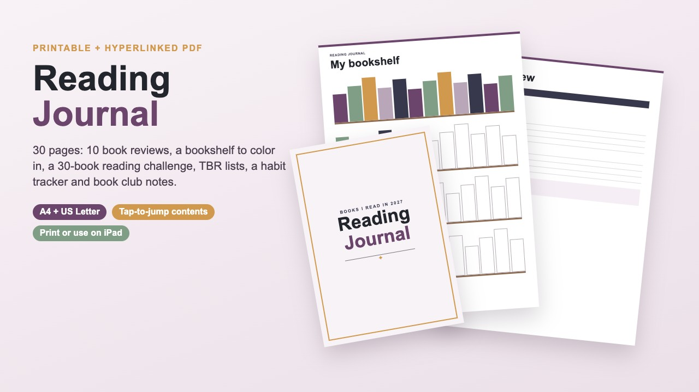
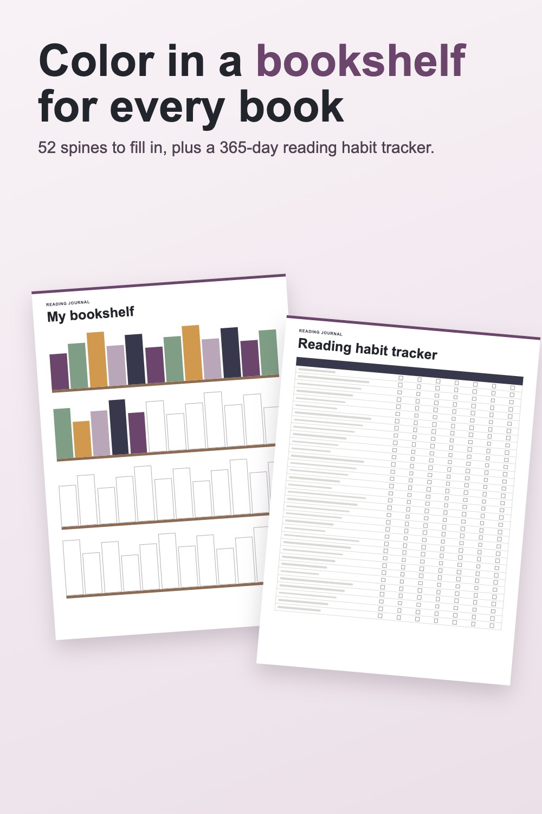

Reading Journal Printable
Remember every book you read. 30 pages to review your books, keep your to be read list in one place, color in a bookshelf as you go and take on a 30-book reading challenge.
Get the reading journal, $5

What's inside
- Start: how to use it, my reading goals, a bookshelf with 52 spines to color in, a 30-book reading challenge
- Lists: 2 to be read lists, books to buy, borrowed and lent books, authors to read, favorite quotes
- Reviews: 10 book review pages with rating, format, favorite quote and would I recommend it
- Track: monthly reading log, reading habit tracker for every day of the year, series tracker
- Book club: 2 book club notes pages
- Review: my year in books, plus 2 notes pages

How to keep a reading journal you will actually use
Review right after you finish
Five minutes is enough: a star rating, one favorite quote and a few lines on how the book made you feel. Months later, that page brings the whole book back.
Make progress visible
Write each title on a spine of the bookshelf page and color it in. A filling shelf is a small reward that keeps you reading.
Use the challenge to find new favorites
Prompts like "a translated book" or "a book from your childhood" push you past your usual picks without making reading feel like homework.
Details
- Two PDFs: A4 and US Letter
- Hyperlinked contents for GoodNotes, Notability or any PDF reader
- Undated: start any time and reprint the review pages as often as you like
- Instant download, for personal use
Get the reading journal
Want to try it first? Download the free reading log. All products: printables and templates.